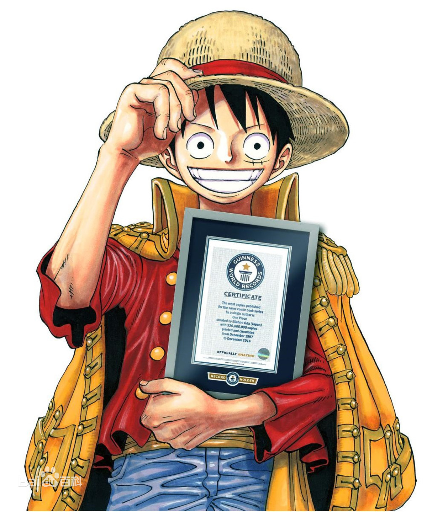

首页

获奖记录
作品简介
故事背景
人物简介
获奖日期
颁奖方
奖项名称
2005年
德国雄达人读者选择奖
国际漫画部门最佳漫画奖
2006年
日本媒体艺术百选
漫画部门第11名
2008年
德国雄达人读者选择奖
国际漫画部门最佳漫画奖
2009年
德国雄达人读者选择奖
国际漫画部门最佳漫画奖
2012年03月16日
社团法人日本漫画家协会
漫画部门最佳少年漫画奖
2012年05月11日
第19届动漫暨漫画大奖
第41回日本漫画家协会赏
2022年8月4日
吉尼斯世界纪录
世界上发行量最高的单一作者创作的系列漫画
剧情介绍
作品评价
作品评价
《航海王》虽然是少年漫画，但它不仅有趣，还能让人特别感动，这是其他少年漫画无法企及的，成年人也能深度阅读，并为之落泪。另外，《航海王》的画风虽然比较欧式，冒险的故事也很新奇，但它宣扬的价值观却是古老的东方式的，例如自我牺牲，舍己为人，这是日本的传统，实际上也是来源于中国的儒家文化。这种价值观能让日本的成年人感动，应该也能打动中国的成年读者。
个人感想
彩蛋